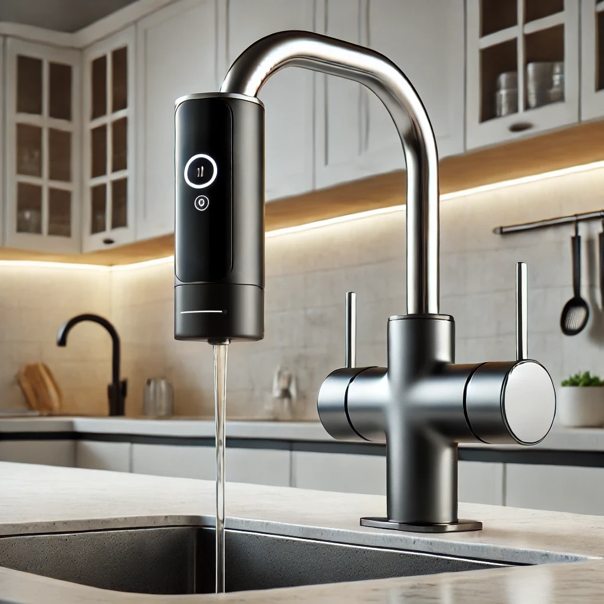

FlavorFlow - Trasforma la Tua Acqua
Il primo dispositivo che combina purificazione, gasatura regolabile e aromatizzazione personalizzabile in un unico prodotto.
>
Perché scegliere FlavorFlow?
- ✅ Purificazione avanzata per un’acqua più sicura e dal gusto perfetto.
- ✅ Gasatura regolabile per creare la tua acqua frizzante ideale.
- ✅ Aromi naturali senza zuccheri aggiunti: Agrumi, Frutti Rossi, Gusti Esotici.
- ✅ Sostenibilità: Riduci il consumo di plastica eliminando le bottiglie monouso.
- ✅ Facile da usare: Montaggio diretto sul rubinetto senza installazioni complesse.
Scopri di più